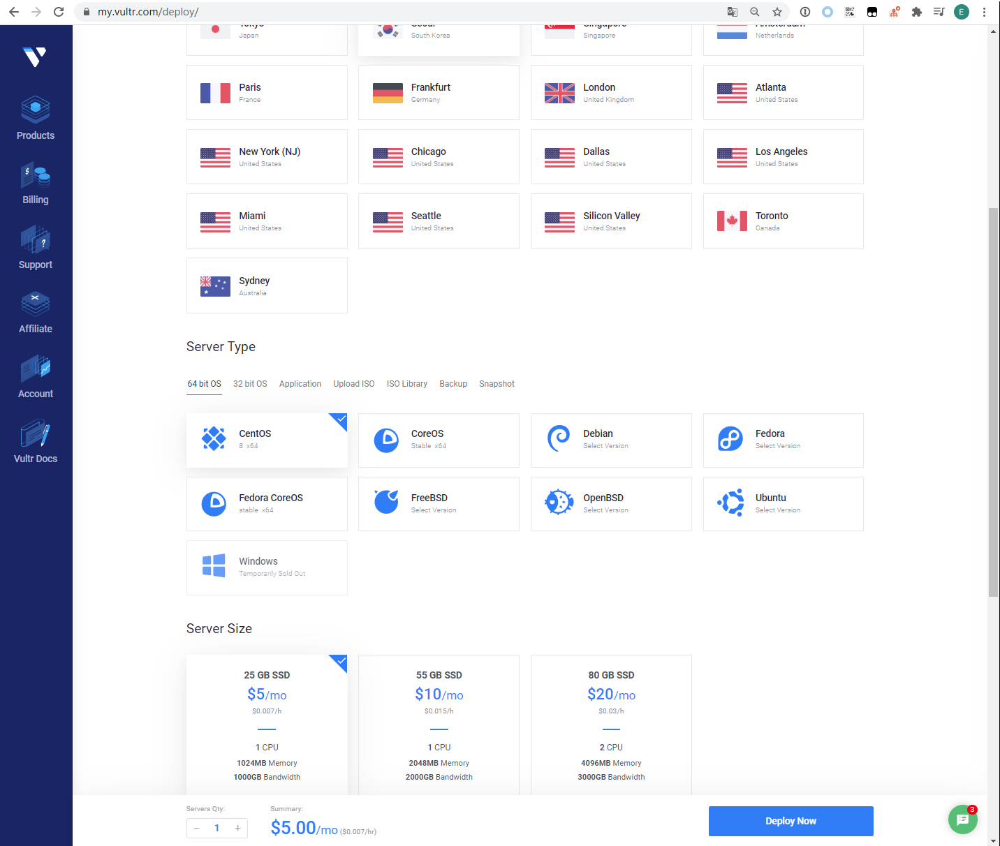
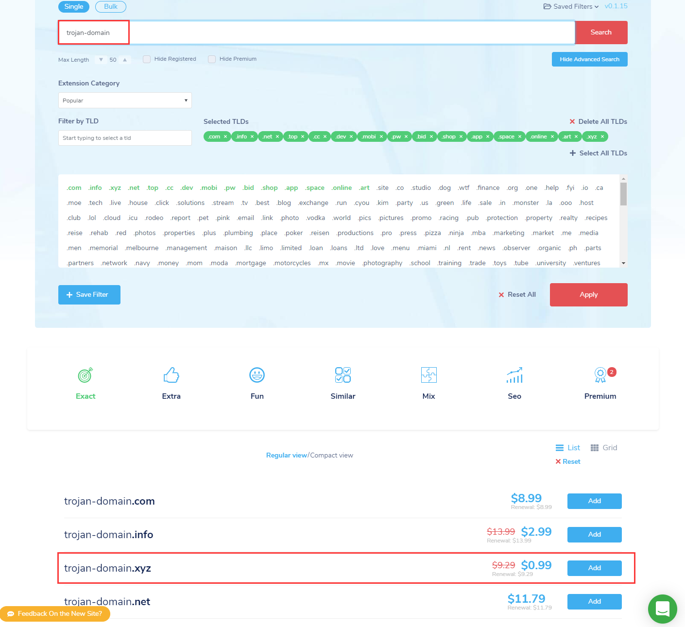
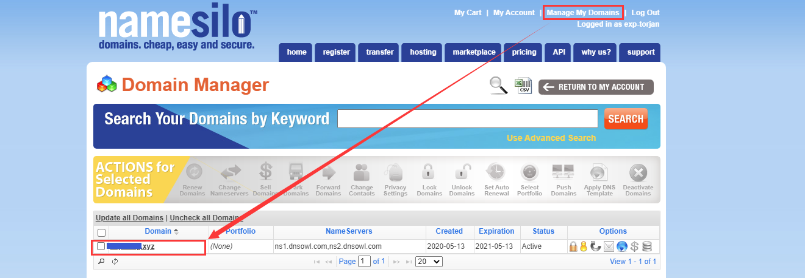
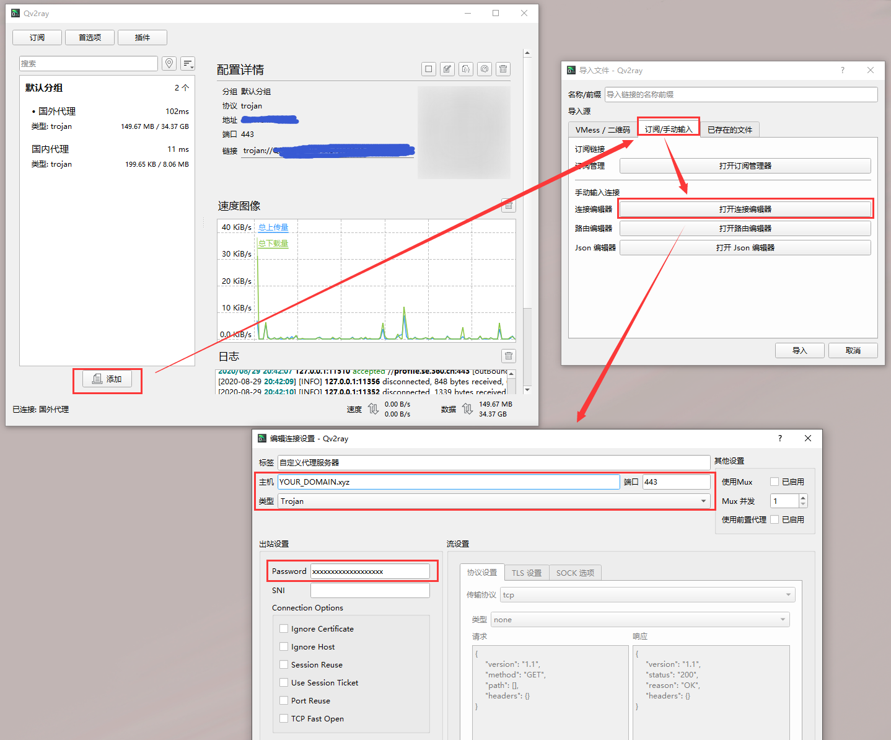

trojan 简介
trojan 是近两年兴起的科学上网工具，项目源码为 https://github.com/trojan-gfw。
与强调加密和混淆的SS/SSR等工具不同，trojan 将通信流量伪装成互联网上最常见的 HTTPS 流量，从而有效防止流量被 GFW 检测和干扰。
在敏感时期，相比于 Shadowsocks 和 v2ray， trojan 能提供更稳定的上网体验。
trojan 原理
trojan 在设计时采用了更适应国情的思路。早期在穿透 GFW 时，人们认为强加密和随机混淆可能会欺骗 GFW 的过滤机制。然而trojan 实现了这个思路的反面：它模仿了互联网上最常见的 HTTPS 协议，以诱骗 GFW 认为它就是 HTTPS，从而不被识别。

如图所示，trojan 工作在 443 端口，并且处理来自外界的 HTTPS 请求，如果是合法的 trojan 请求，那么为该请求提供代理服务，否则将该流量转交给 nginx，由 nginx 为其提供 web 服务。
基于这个工作过程可知，trojan 的一切表现均与 nginx 一致，不会引入额外特征，从而达到无法识别的效果。当然，为了防止恶意探测，我们需要将 80 端口的流量全部重定向到 nginx，并且服务器尽量只暴露 80 和 443 端口，这样可以使得服务器与常见的 web 服务器表现一致。
安装前准备
- 申请 1 台海外 VPS 服务器： 用于提供科学上网代理
- 申请 1 个域名并解析到该 VPS 服务器： 用于伪装 web 站点
申请 VPS 服务器
调研了多个海外 VPS 服务商，首推 vultr， 1C1G 的配置 5 美刀/月，很实惠。每个月有 1000G 流量，看视频都足够了。
当然其他 VPS 服务商也不会差多少，都是价格的问题，自己按需选择即可。
注意不要选用国内的云服务器，腾讯云、阿里云等都是禁止访问外网的，更别说科学上网了。

若选择了 CentOS 系统，先登陆服务器关闭 SELinux :
setenforce 0然后修改防火墙规则，放行相关协议流量：
firewall-cmd --permanent --add-service=https
firewall-cmd --permanent --add-service=http
firewall-cmd --permanent --add-port=80/tcp
firewall-cmd --permanent --add-port=443/tcp
firewall-cmd --permanent --add-port=8443/tcp
firewall-cmd --reload或者直接关闭防火墙亦可：
systemctl stop firewalld
systemctl disable firewalld若 VPS 页面控制台可以配置安全组/访问控制规则，需记得放行相应端口： 80、 443、 8443
申请域名与解析
需要注意的是，申请域名不能在国内的服务商处进行申请，比如阿里云，腾讯云等，因为国内的域名需要备案（即在政府审批）后才能使用，而由于我们是用来科学上网的，不可能去备案的，而且备案需要很长的时间。
因此我们只能在国外的服务商处注册域名，因为国外的域名除了 .cn 之外，不需要备案，即买即用。
以前可以通过 freenom 申请免费域名，但是现在这个网站越来越不稳定，总是申请不上。
这里推荐在最便宜的域名服务商 namesilo 购买的域名，使用 .xyz 域名只需要 0.99 美刀/年，而且提供免费的域名解析服务。

购买域名后，通过 【Manage My Domains】 => 【Domain】 => 【DNS Records:Update】 添加两个 A 类型域名解析（无 www 和 有 www），都解析到前面租用的 VPS 服务器 IP 即可，大概 1 小时生效。



根据 trojan的 原理，其实无需域名也能使用，直接对 VPS IP 自签发证书即可，但是直接通过 IP 提供 web 服务很容易被电信查到，不如有域名的稳定
申请域名 HTTPS 证书
有很多方法可以为域名申请 HTTPS 证书，这里推荐使用 Let’s Encrypt 获取免费证书。
Let’s Encrypt 是一个免费、非营利性的开放证书权威中心，由互联网安全研究小组（ISRG）支持，签发的免费证书被各个主流浏览器认可。任何域名持有人均可使用 Let’s Encrypt 申请免费证书来加密网站流量，公司、机构则建议付费获取 OV、EV 证书。
域名没备案且 VPS 在国内，可能无法申请成功，解决办法请参考 这里
要获得 Let’s Encrypt 颁发的证书，需要首先安装 certbot ，这里通过 python3 安装：
# 考虑到国内安装超时问题，已指定了安装源为清华源
python3 -m pip install certbot --default-timeout=600 -i https://pypi.tuna.tsinghua.edu.cn/simple然后通过此命令申请域名的 HTTPS 证书（注意替换 YOUR_DOMAIN）：
# 第一次执行该命令，需要根据交互步骤先注册邮箱（注意保存好），以后不再需要
# 该命令会占用 80 端口，执行前注意要停止相关进程（如 nginx）
/usr/local/bin/certbot certonly --standalone -d YOUR_DOMAIN -d www.YOUR_DOMAIN证书默认的有效期为 90 天，在到期前的 30 天可以重新执行以下命令为更新证书有效期：
# 该命令会占用 80 端口，执行前注意要停止相关进程（如 nginx）
/usr/local/bin/certbot renew但是每次都手动更新会比较麻烦，可以将其设置到 crontab 自动更新证书：
# 编辑定时任务
crontab -e
# 每两个月更新一次证书
0 0 1 */2 0 /usr/local/bin/certbot renewcertbot 申请的证书存储在 /etc/letsencrypt 目录:
- 其他目录为 certbot 的注册账号信息
archive/YOUR_DOMAIN/： 存储 YOUR_DOMAIN 域名申请过的历史证书live/YOUR_DOMAIN/： 存储 YOUR_DOMAIN 域名当前有效证书的链接文件
之后会用到的只有两个文件：
/etc/letsencrypt/live/YOUR_DOMAIN/fullchain.pem/etc/letsencrypt/live/YOUR_DOMAIN/privkey.pem
在宿主机安装服务端
安装 trojan
官方提供了一个 快速安装脚本，直接执行如下命令可完成 trojan 服务端的安装:
sudo bash -c "$(curl -fsSL https://raw.githubusercontent.com/trojan-gfw/trojan-quickstart/master/trojan-quickstart.sh)"安装完成后 trojan 会得到以下文件：
- 启动脚本：
/etc/systemd/system/trojan.service - 执行脚本：
/usr/local/bin/trojan - 配置文件：
/usr/local/etc/trojan/config.json
修改 /usr/local/etc/trojan/config.json 四处位置：
remote_addr: 伪装为 HTTP 服务的站点 IP， 因为后面会用 nginx 部署在本地，因此设置为127.0.0.1即可password: 之后 trojan 客户端连接到 trojan 服务的密码，可以设置多个cert: 前面申请的域名证书文件位置， 如/etc/letsencrypt/live/YOUR_DOMAIN/fullchain.pemkey: 前面申请的域名证书私钥位置， 如/etc/letsencrypt/live/YOUR_DOMAIN/privkey.pem

最后启动 trojan 服务并设置为开机自启：
systemctl start trojan
systemctl enable trojan安装 nginx
以 CentOS 为例，安装命令为：
yum install -y epel-release && yum install -y nginx安装完成后，可把伪装站点的 HTML 文件上传到 /usr/share/nginx/html 目录。
修改 /etc/nginx/conf.d/default.conf 配置伪装站点的服务参数，参考配置如下（注意替换 YOUR_DOMAIN）：
server {
listen 80;
server_name YOUR_DOMAIN www.YOUR_DOMAIN;
# rewrite ^(.*) https://$server_name$1 permanent;
return 302 https://$server_name:8443$request_uri;
}
server {
listen 8443 ssl;
server_name YOUR_DOMAIN www.YOUR_DOMAIN;
charset utf-8;
ssl_certificate /etc/letsencrypt/live/YOUR_DOMAIN/fullchain.pem;
ssl_certificate_key /etc/letsencrypt/live/YOUR_DOMAIN/privkey.pem;
# TLSv1.3需要nginx 1.13.0以上版本
ssl_protocols TLSv1.2 TLSv1.3;
# 如果nginx版本低，建议使用这种加密算法配置
# ssl_ciphers ECDHE-RSA-AES128-GCM-SHA256:ECDHE:ECDH:AES:HIGH:!NULL:!aNULL:!MD5:!ADH:!RC4;
ssl_ciphers ECDHE-RSA-AES256-GCM-SHA512:DHE-RSA-AES256-GCM-SHA512:ECDHE-RSA-AES256-GCM-SHA384:DHE-RSA-AES256-GCM-SHA384:ECDHE-RSA-AES256-SHA384;
ssl_ecdh_curve secp384r1;
ssl_prefer_server_ciphers on;
ssl_session_cache shared:SSL:10m;
ssl_session_timeout 10m;
ssl_session_tickets off;
keepalive_timeout 70;
location / {
root /usr/share/nginx/html;
index index.html index.htm;
}
error_page 500 502 503 504 /50x.html;
location = /50x.html {
root /usr/share/nginx/html;
}
}最后启动 nginx 服务并设置为开机自启：
systemctl start nginx
systemctl enable nginx至此 trojan 服务安装完成。
在 Docker 安装服务端（推荐）
但是直接在宿主机上安装 trojan 服务比较繁琐，故我把前面的流程封装成 docker ，以便一键安装。
先在宿主机完成 docker、docker-compose、certbot 的安装，并按前述说明申请域名的 HTTPS 证书。
docker 构建源码已上传到 Github， 主要的安装步骤如下：
# 下载项目源码
git clone https://github.com/lyy289065406/trojan-docker /usr/local/trojan-docker
cd /usr/local/trojan-docker
# 构建 docker 镜像
# password 为之后客户端连接 trojan 的密码
# domain 为前面准备好的域名
password=YOUR_PASSWORD domain=YOUR_DOMAIN docker-compose build
# 刷新证书有效期，并复制宿主机的 HTTPS 证书到 docker 容器
# 建议把此脚本设置到 crontab 定时执行
./renew_cert.sh
# 在后台启动 trojan 服务
docker-compose up -d最后把 /usr/local/trojan-docker/nginx/html 下的内容替换为伪装站点的 HTML 内容即可。
至此 trojan 服务安装完成。
安装 PC 客户端（Windows / Mac / Linux）
安装 Qv2ray
trojan 的客户端有很多，推荐使用 Qv2ray， 支持 Windows / Mac / Linux 全平台。
安装步骤参考 官方手册 即可。
安装完成后，在 【添加】 => 【订阅/手动输入】 => 【打开连接编辑器】 填写 域名 和 trojan 服务端设置的密码即可连接到 trojan 服务端。

Chrome 配置 Proxy SwitchyOmega
但仅仅是连接到 trojan 服务端并不能访问外网，还需要把本地流量导向 Qv2ray 。
通过 【首选项】 => 【入站设置】 可以看见 Qv2ray 在本地启动了 SOCK5:1088 和 HTTP:8888 两个代理服务。

此时只能通过系统全局代理把本地流量导向 Qv2ray ，但因为是全局代理，十分不方便：

建议在 Chrome 浏览器安装 Proxy SwitchyOmega 插件（需科学上网），新建情景模式配置 SOCK5:1088 代理服务，再利用 auto switch 根据域名条件按需把流量导向 Qv2ray 即可。


安装手机客户端（Android）
官方提供了 igniter 客户端，安装后填写 域名 和 trojan 服务端设置的密码即可直接使用。